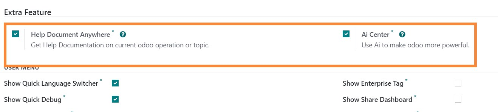
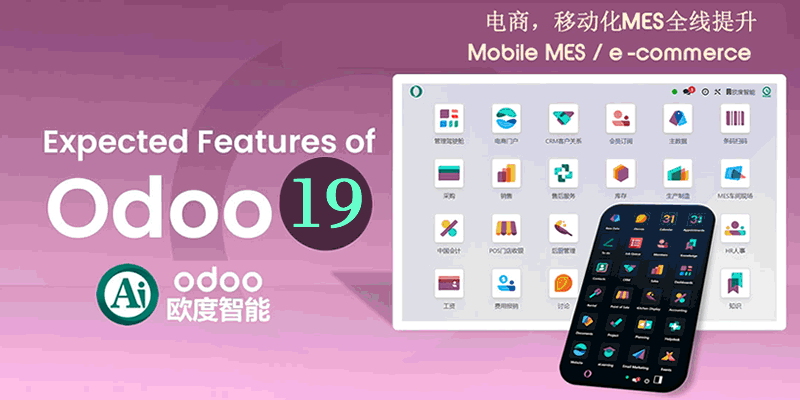

如果你使用企业版，请获取我们针对企业版的定制优化模块
从odoo官方应用商店获取 "app_web_enterprise" 应用模块
这是一个长期更新维护的odoo应用模块,最近更新 Update: v18.0.25.08.24
- 1. 删除菜单导航页脚的 Odoo 标签
- 2. 将弹出窗口中 "Odoo" 设置为自定义名称
- 3. 自定义用户菜单中的 Documentation, Support, About 的链接
- 4. 在用户菜单中增加快速切换开发模式
- 5. 在用户菜单中增加快速切换多国语言
- 6. 对语言菜单进行美化，设置国旗图标
- 7. 在用户菜单中增加中/英文用户手册，可以不用翻墙加速了
- 8. 在用户菜单中增加开发者手册，含python教程，jquery参考，Jinja2模板，PostgresSQL参考
- 9. 在用户菜单中自定义"My odoo.com account"
- 10. 单独设置面板，每个选项都可以自定义
- 11. 提供236个国家/地区的国旗文件（部份需要自行设置文件名）
- 12. 多语言版本
- 13. 自定义登陆界面中的 Powered by Odoo
- 14. 快速删除测试数据，支持模块包括：销售/POS门店/采购/生产/库存/会计/项目/消息与工作流等.
- 15. 将各类单据的序号重置，从1开始，包括：SO/PO/MO/Invoice 等
- 16. 修复odoo启用英文后模块不显示中文的Bug
- 17. 可停用odoo自动订阅功能，避免“同样对象关注2次”bug，同时提升性能
- 18. 显示/隐藏应用的作者和网站-在应用安装面板中
- 19. 一键清除所有数据（视当前数据情况，有时需点击2次）
- 20. 在应用面板显示快速升级按键，点击时不会导航至 odoo.com
- 21. 清除并重置会计科目表
- 22. 全新升级将odoo12用户及开发手册导航至国内网站，或者自己定义的网站
- 23. 增加清除网站数据功能
- 24. 自定义 odoo 原生模块跳转的url(比如企业版模块)
- 25. 增加删除费用报销数据功能
- 26. 增加批量卸载模块功能
- 27. 增加odoo加速功能
- 28. 快速管理顶级菜单
- 29. App版本比较，快速查看可本地更新的模块
- 30. 一键导出翻译文件 po
- 31. 显示或去除 odoo 推荐
- 32. 增加修复品类及区位名的操作
- 33. 增加 Demo 的显示设置
- 34. 增加清除质检数据
- 35. 优化至odoo14适用
- 36. 可为多个模块强制更新翻译
- 37. noupdate字段的快速管理，主要针对 xml_id
- 38. 对话框可拖拽，可缩放，自动大屏优化
- 39. 只有系统管理员可以操作快速debug
- 40. 增强对企业版的支持
- 41. 修正odoo原生移动端菜单bug，点击个人设置时，原菜单不隐藏等
- 42. 可设置导航栏在上方还是下方，分开桌面与移动端.
- 43. 可设置只允许管理员进入开发者模式，不可在url中直接debut=1来调试
- 44. 可配置停用自动用户订阅功能，这会提速odoo，减少资源消耗
- 45. 为应用模块增加模块路径信息
- 46. 增加快速帮助文档，可以在任意操作中获取相关的 odoo 帮助.
- 47. 增加Ai模块相关信息，可以快速访问ai模块，使用ai员工.
- 48. 增加可配置的系统调试标签，用于系统测试期提示.
- 49. 增加 SaaS 客户端开头，可让用户安装在线翻译同步模块及在线更新(仅odoo18).
- 50. 快速菜单管理，快速禁用/启用菜单.
- 51. 在开发者Assets模式中，快速查看菜单Menu 的 xml_id.
- 52. 快速管理查看模型的字段和视图列表.
- 53. 快速管理查看应用权限分类管理.
此模块用于 OEM 你的 odoo，增加自己公司的 Logo 相关信息及版权相关信息。
便于快速开发、快速培训、可速查找odoo帮助文档。也可以方便的进行odoo数据清理与重置。
odoo系统内快速帮助
增加快速帮助文档，可以在任意操作中获取相关的 odoo 帮助.
自动设置文章Logo为公司Logo

可手动设置模块帮助链接

注意必须在开发者模式

Ai服务中心支持
你可以安装最新的 ChatGPT 或者 微软、谷歌等Ai.

Odoo 快速自定义，OEM改造，快速Debug、语言切换等全面增强

多语言支持，中文已处理


如何使用: 转到 设置 -> odooAi -> 定制与增强
Odoo系统贴牌OEM White label
该模块可以帮助为Odoo贴上白标。将Odoo改为您设计的系统名称，替换Windows标题中的“Odoo”，删除页脚中的Odoo标签，将所有odoo链接自定义到我的链接
移动端增强，可设置桌面端与移动端的菜单位置
可设置为在顶部或底部

odoo安全增强及提速
可设置为仅管理员可调试，可设置停止订阅信息以提速（电商系统不建议停订阅）
为Odoo应用模块增加快速操作
如更新翻译，升级，卸载，快速在线帮助
批量升级等操作

快速导出po翻译文件
可拖动的对话框

显示或隐藏相关模块的作者信息
操作前

操作后，当不勾选 "显示应用的作者-在安装面板中"
显示快速升级，同时点击应用模块信息时，跳转至自定义网站
不会跳转至odoo.com
快速切换翻译，如需语言图片，只需将标志图片重命名为国家/地区的区域设置代码即可
图片位于 "\app-odoo\app_odoo_customize\static\src\img\flags"
自定义额外的企业模块 URL

一键快速删除测试数据
您可以快速删除应用程序中的所有测试数据：销售/POS/采购/MRP/库存/HR报销/会计/消息/工作流等。